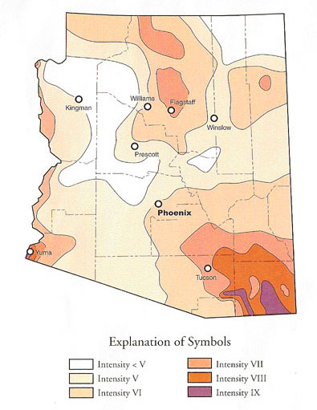

GROUND SHAKING AND EARTHQUAKE DAMAGE IN ARIZONA (1887-2014)
Earthquake damage is related to the size of an earthquake, distance from the earthquake, and the ability of buildings and other structures to survive seismic shaking. The Modified Mercalli intensity scale has 12 levels that quantify shaking and damage based on eyewitness accounts and post-earthquake assessments. Shaking is widely felt at intensity level IV. Significant structural damage begins at level VII, and widespread damage occurs at level XII and above. Damage and destruction are nearly total at intensity level XII. Ground shaking intensity levels associated with an earthquake can be mapped using repots from many places. Although intensity scales do not translate directly into earthquake magnitude, larger earthquakes cause more destruction over broader regions. Damage patterns also point out poor building practices and differences in shaking that are related to local variations in geology. Seismic shaking is generally greater in areas covered with thick, young sediment than on bedrock.
All of Arizona has experienced some earthquake shaking since 1887, but significant damage has occurred in only a few areas. This map shows the maximum historical ground shaking intensities in various parts of Arizona. Intensity levels as high as IX occurred in southeastern Arizona during the 1887 Sonoran earthquake, which damaged buildings throughout the sparsely populated region. The Yuma area experienced strong shaking and significant damage because of the 1940 Imperial Valley earthquake in southern California. Three magnitude ~6 earthquakes in the early 1900's caused some damage In the Flagstaff-Grand Canyon region. Moderate earthquakes that have occurred in northern Arizona since then have caused only minor damage.
The Modified Mercalli Scale of Intensity of Ground Shaking
I. Not felt except by a very few under especially favorable circumstances.II. Felt only by a few persons at rest, especially on upper floors of buildings. Delicately suspended objects may swing.
III. Felt quite noticeably indoors, especially on upper floors of buildings, but many people do not recognize it as an earthquake. Standing motor cars may rock slightly. Vibration like passing of truck. Duration estimated.
IV. During the day felt indoors by many, outdoors by few. At night, some awakened. Dishes, windows, doors disturbed; walls made cracking sound. Sensation like heavy truck striking building. Standing motor cards rocked noticeably.
V. Felt by nearly everyone; many awakened. Some dishes, windows, etc. broken; a few instances of cracked plaster; unstable objects overturned. Disturbance of trees, poles, and other tall objects sometimes noticed. Pendulum clocks may stop.
VI. Felt by all; many frightened and run outdoors. Some heavy furniture moved; a few instances of fallen plaster or damaged chimneys. Damage slight.
VII. Everybody runs outdoors. Damage negligible in buildings of good design and construction; slight to moderate in well-built ordinary structures; considerable in poorly built or badly designed structures; some chimneys broken. Noticed by persons driving motor cars.
VIII. Damage slight in specially designed structures; considerable in ordinary substantial building with partial collapse; great in poorly built structures. Panel walls thrown out of frame structures. Fall of chimneys, factory stacks, columns, monuments, walls. Heavy furniture overturned. Sand and mud ejected in small amounts. Changes in well water. Disturbs persons driving motor cars.
IX. Damage considerable in specially designed structures; well designed frame structures thrown out of plumb; great in substantial buildings, with partial collapse. Building shifted off foundations. Ground cracked conspicuously. Underground pipes broken.
X. Some well-built wooden structures destroyed; most masonry and frame structures destroyed with foundations; ground badly cracked. Rails bent. Landslides considerable from river banks and steep slopes. Shifted sand and mud. Water splashed (slopped) over banks.
XI. Few if any (masonry) structures remain standing. Bridges destroyed. Broad fissures in ground. Underground pipe lines completely out of service. Earth slumps and land slips in soft ground. Rails bent greatly.
XII. Damage total. Waves seen on ground surfaces. Lines of sight and level distorted. Objects thrown upward into the air.